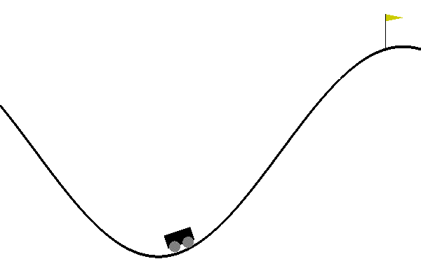

Mountain Car with Amazon SageMaker RL
AWS SageMaker Example: https://github.com/awslabs/amazon-sagemaker-examples/tree/master/reinforcement_learning/rl_mountain_car_coach_gymEnv
Overview
Mountain Car is a classic control Reinforcement Learning problem that was first introduced by A. Moore in 1991 [1]. An under-powered car is tasked with climbing a steep mountain, and is only successful when it reaches the top. Luckily there's another mountain on the opposite side which can be used to gain momentum, and launch the car to the peak. It can be tricky to find this optimal solution due to the sparsity of the reward. Complex exploration strategies can be used to incentivise exploration of the mountain, but to keep things simple in this example we extend the amount of time in each episode from Open AI Gym's default of 200 environment steps to 10,000 steps, showing how to customise environments. We consider two variants in this example: PatientMountainCar for discrete actions and PatientContinuousMountainCar for continuous actions.

PatientMountainCar
- Objective: Get the car to the top of the right hand side mountain.
- Environment(s): Open AI Gym's
MountainCar-v0that is extended to 10,000 steps per episode.- State: Car's horizontal position and velocity (can be negative).
- Action: Direction of push (left, nothing or right).
- Reward: -1 for every environment step until success, which incentivises quick solutions.
PatientContinuousMountainCar
- Objective: Get the car to the top of the right hand side mountain.
- Environment(s): Open AI Gym's
MountainCarContinuous-v0that is extended to 10,000 steps per episode.- State: Car's horizontal position and velocity (can be negative).
- Action: Mmagnitude of push (if negative push to left, if positive push to right).
- Reward: +100 for reaching top of the right hand side mountain, minus the squared sum of actions from start to end.
[1] A. Moore, Efficient Memory-Based Learning for Robot Control, PhD thesis, University of Cambridge, November 1990.
Prerequisites
Clone the sample code
- In JupyterLab, click the Terminal icon to open a new terminal
- To clone the tutorial repository, run the following command
git clone https://github.com/lbnl-science-it/aws-sagemaker-rl.git
- In JupyterLab, navigate to
aws-sagemaker-rland openrl_mountain_car_coach_gymEnv.ipynb
Contents
rl_mountain_car_coach_gym.ipynb: notebook used for training Mountain Car policysrc/patient_envs.py: custom environments defined here.src/train-coach.py: launcher for coach trainingsrc/preset-mountain-car-continuous-clipped-ppo.py: coach preset for Clipped PPO.src/preset-mountain-car-dqn.py: coach preset for DQN.
Imports
To get started, we'll import the Python libraries we need, set up the environment with a few prerequisites for permissions and configurations.
import sagemaker
import boto3
import sys
import os
import glob
import re
import subprocess
import numpy as np
from IPython.display import HTML
import time
from time import gmtime, strftime
sys.path.append("common")
from misc import get_execution_role, wait_for_s3_object
from sagemaker.rl import RLEstimator, RLToolkit, RLFramework
Setup S3 bucket
Set up the linkage and authentication to the S3 bucket that you want to use for checkpoint and the metadata.
sage_session = sagemaker.session.Session()
s3_bucket = sage_session.default_bucket()
s3_output_path = 's3://{}/'.format(s3_bucket)
print("S3 bucket path: {}".format(s3_output_path))
S3 bucket path: s3://sagemaker-us-west-2-485444084140/
Define Variables
We define variables such as the job prefix for the training jobs and the image path for the container (only when this is BYOC).
# create unique job name
job_name_prefix = 'rl-mountain-car'
Configure settings
You can run your RL training jobs on a SageMaker notebook instance or on your own machine. In both of these scenarios, you can run in either 'local' (where you run the commands) or 'SageMaker' mode (on SageMaker training instances). 'local' mode uses the SageMaker Python SDK to run your code in Docker containers locally. It can speed up iterative testing and debugging while using the same familiar Python SDK interface. Just set local_mode = True. And when you're ready move to 'SageMaker' mode to scale things up.
# run in local mode?
local_mode = False
Create an IAM role
Either get the execution role when running from a SageMaker notebook instance role = sagemaker.get_execution_role() or, when running from local notebook instance, use utils method role = get_execution_role() to create an execution role.
try:
role = sagemaker.get_execution_role()
except:
role = get_execution_role()
print("Using IAM role arn: {}".format(role))
Install docker for local mode
In order to work in local mode, you need to have docker installed. When running from you local machine, please make sure that you have docker or docker-compose (for local CPU machines) and nvidia-docker (for local GPU machines) installed. Alternatively, when running from a SageMaker notebook instance, you can simply run the following script to install dependenceis.
Note, you can only run a single local notebook at one time.
# only run from SageMaker notebook instance
if local_mode:
!/bin/bash ./common/setup.sh
Setup the environment
We create a file called src/patient_envs.py for our modified environments. We can create a custom environment class or create a function that returns our environment. Since we're using Open AI Gym environment and wrappers, we just create functions that take the classic control environments MountainCarEnv and Continuous_MountainCarEnv and wrap them with a TimeLimit where we specify the max_episode_steps to 10,000.
!pygmentize src/patient_envs.py
[34mfrom[39;49;00m [04m[36mgym.envs.classic_control.mountain_car[39;49;00m [34mimport[39;49;00m MountainCarEnv
[34mfrom[39;49;00m [04m[36mgym.envs.classic_control.continuous_mountain_car[39;49;00m [34mimport[39;49;00m Continuous_MountainCarEnv
[34mfrom[39;49;00m [04m[36mgym.wrappers.time_limit[39;49;00m [34mimport[39;49;00m TimeLimit
[34mdef[39;49;00m [32mPatientMountainCar[39;49;00m():
env = MountainCarEnv()
[34mreturn[39;49;00m TimeLimit(env, max_episode_steps=[34m10000[39;49;00m)
[34mdef[39;49;00m [32mPatientContinuousMountainCar[39;49;00m():
env = Continuous_MountainCarEnv()
[34mreturn[39;49;00m TimeLimit(env, max_episode_steps=[34m10000[39;49;00m)
Configure the presets for RL algorithm
The presets that configure the RL training jobs are defined in the "preset-mountain-car-continuous-clipped-ppo.py" file which is also uploaded on the /src directory. Also see "preset-mountain-car-dqn.py" for the discrete environment case. Using the preset file, you can define agent parameters to select the specific agent algorithm. You can also set the environment parameters, define the schedule and visualization parameters, and define the graph manager. The schedule presets will define the number of heat up steps, periodic evaluation steps, training steps between evaluations.
These can be overridden at runtime by specifying the RLCOACH_PRESET hyperparameter. Additionally, it can be used to define custom hyperparameters.
!pygmentize src/preset-mountain-car-continuous-clipped-ppo.py
[34mfrom[39;49;00m [04m[36mrl_coach.agents.clipped_ppo_agent[39;49;00m [34mimport[39;49;00m ClippedPPOAgentParameters
[34mfrom[39;49;00m [04m[36mrl_coach.architectures.layers[39;49;00m [34mimport[39;49;00m Dense
[34mfrom[39;49;00m [04m[36mrl_coach.base_parameters[39;49;00m [34mimport[39;49;00m VisualizationParameters, PresetValidationParameters
[34mfrom[39;49;00m [04m[36mrl_coach.core_types[39;49;00m [34mimport[39;49;00m TrainingSteps, EnvironmentEpisodes, EnvironmentSteps, RunPhase, \
SelectedPhaseOnlyDumpFilter, MaxDumpFilter
[34mfrom[39;49;00m [04m[36mrl_coach.environments.gym_environment[39;49;00m [34mimport[39;49;00m GymVectorEnvironment
[34mfrom[39;49;00m [04m[36mrl_coach.exploration_policies.e_greedy[39;49;00m [34mimport[39;49;00m EGreedyParameters
[34mfrom[39;49;00m [04m[36mrl_coach.filters.observation.observation_normalization_filter[39;49;00m [34mimport[39;49;00m ObservationNormalizationFilter
[34mfrom[39;49;00m [04m[36mrl_coach.graph_managers.basic_rl_graph_manager[39;49;00m [34mimport[39;49;00m BasicRLGraphManager
[34mfrom[39;49;00m [04m[36mrl_coach.graph_managers.graph_manager[39;49;00m [34mimport[39;49;00m ScheduleParameters
[34mfrom[39;49;00m [04m[36mrl_coach.schedules[39;49;00m [34mimport[39;49;00m LinearSchedule
[37m####################[39;49;00m
[37m# Graph Scheduling #[39;49;00m
[37m####################[39;49;00m
schedule_params = ScheduleParameters()
schedule_params.improve_steps = EnvironmentEpisodes([34m100[39;49;00m)
schedule_params.steps_between_evaluation_periods = EnvironmentEpisodes([34m10[39;49;00m)
schedule_params.evaluation_steps = EnvironmentEpisodes([34m1[39;49;00m)
schedule_params.heatup_steps = EnvironmentEpisodes([34m10[39;49;00m)
[37m#########[39;49;00m
[37m# Agent #[39;49;00m
[37m#########[39;49;00m
agent_params = ClippedPPOAgentParameters()
agent_params.network_wrappers[[33m'[39;49;00m[33mmain[39;49;00m[33m'[39;49;00m].learning_rate = [34m0.001[39;49;00m
agent_params.network_wrappers[[33m'[39;49;00m[33mmain[39;49;00m[33m'[39;49;00m].input_embedders_parameters[[33m'[39;49;00m[33mobservation[39;49;00m[33m'[39;49;00m].activation_function = [33m'[39;49;00m[33mtanh[39;49;00m[33m'[39;49;00m
agent_params.network_wrappers[[33m'[39;49;00m[33mmain[39;49;00m[33m'[39;49;00m].input_embedders_parameters[[33m'[39;49;00m[33mobservation[39;49;00m[33m'[39;49;00m].scheme = [Dense([34m32[39;49;00m)]
agent_params.network_wrappers[[33m'[39;49;00m[33mmain[39;49;00m[33m'[39;49;00m].middleware_parameters.scheme = [Dense([34m32[39;49;00m)]
agent_params.network_wrappers[[33m'[39;49;00m[33mmain[39;49;00m[33m'[39;49;00m].middleware_parameters.activation_function = [33m'[39;49;00m[33mtanh[39;49;00m[33m'[39;49;00m
agent_params.network_wrappers[[33m'[39;49;00m[33mmain[39;49;00m[33m'[39;49;00m].batch_size = [34m256[39;49;00m
agent_params.network_wrappers[[33m'[39;49;00m[33mmain[39;49;00m[33m'[39;49;00m].optimizer_epsilon = [34m1e-5[39;49;00m
agent_params.network_wrappers[[33m'[39;49;00m[33mmain[39;49;00m[33m'[39;49;00m].adam_optimizer_beta2 = [34m0.999[39;49;00m
agent_params.algorithm.clip_likelihood_ratio_using_epsilon = [34m0.3[39;49;00m
agent_params.algorithm.clipping_decay_schedule = LinearSchedule([34m0.5[39;49;00m, [34m0.1[39;49;00m, [34m10000[39;49;00m * [34m50[39;49;00m)
agent_params.algorithm.beta_entropy = [34m0[39;49;00m
agent_params.algorithm.gae_lambda = [34m0.95[39;49;00m
agent_params.algorithm.discount = [34m0.999[39;49;00m
agent_params.algorithm.estimate_state_value_using_gae = [36mTrue[39;49;00m
agent_params.algorithm.num_steps_between_copying_online_weights_to_target = EnvironmentEpisodes([34m10[39;49;00m)
agent_params.algorithm.num_episodes_in_experience_replay = [34m100[39;49;00m
agent_params.algorithm.num_consecutive_playing_steps = EnvironmentEpisodes([34m10[39;49;00m)
agent_params.algorithm.optimization_epochs = [34m10[39;49;00m
agent_params.pre_network_filter.add_observation_filter([33m'[39;49;00m[33mobservation[39;49;00m[33m'[39;49;00m, [33m'[39;49;00m[33mnormalize_observation[39;49;00m[33m'[39;49;00m,
ObservationNormalizationFilter(name=[33m'[39;49;00m[33mnormalize_observation[39;49;00m[33m'[39;49;00m))
[37m###############[39;49;00m
[37m# Environment #[39;49;00m
[37m###############[39;49;00m
env_params = GymVectorEnvironment(level=[33m'[39;49;00m[33mpatient_envs:PatientContinuousMountainCar[39;49;00m[33m'[39;49;00m)
[37m#################[39;49;00m
[37m# Visualization #[39;49;00m
[37m#################[39;49;00m
vis_params = VisualizationParameters()
vis_params.dump_gifs = [36mTrue[39;49;00m
vis_params.video_dump_filters = [SelectedPhaseOnlyDumpFilter(RunPhase.TEST), MaxDumpFilter()]
[37m########[39;49;00m
[37m# Test #[39;49;00m
[37m########[39;49;00m
preset_validation_params = PresetValidationParameters()
preset_validation_params.test = [36mTrue[39;49;00m
preset_validation_params.min_reward_threshold = [34m150[39;49;00m
preset_validation_params.max_episodes_to_achieve_reward = [34m250[39;49;00m
graph_manager = BasicRLGraphManager(agent_params=agent_params, env_params=env_params,
schedule_params=schedule_params, vis_params=vis_params,
preset_validation_params=preset_validation_params)
Write the Training Code
The training code is written in the file “train-coach.py” which is uploaded in the /src directory.
We create a custom SageMakerCoachPresetLauncher which sets the default preset, maps and ties hyperparameters.
!pygmentize src/train-coach.py
[34mfrom[39;49;00m [04m[36msagemaker_rl.coach_launcher[39;49;00m [34mimport[39;49;00m SageMakerCoachPresetLauncher
[34mclass[39;49;00m [04m[32mMyLauncher[39;49;00m(SageMakerCoachPresetLauncher):
[34mdef[39;49;00m [32mdefault_preset_name[39;49;00m([36mself[39;49;00m):
[33m"""This points to a .py file that configures everything about the RL job.[39;49;00m
[33m It can be overridden at runtime by specifying the RLCOACH_PRESET hyperparameter.[39;49;00m
[33m """[39;49;00m
[34mreturn[39;49;00m [33m'[39;49;00m[33mpreset-mountaincarcontinuous-clippedppo.py[39;49;00m[33m'[39;49;00m
[34mdef[39;49;00m [32mmap_hyperparameter[39;49;00m([36mself[39;49;00m, name, value):
[33m"""Here we configure some shortcut names for hyperparameters that we expect to use frequently.[39;49;00m
[33m Essentially anything in the preset file can be overridden through a hyperparameter with a name [39;49;00m
[33m like "rl.agent_params.algorithm.etc". [39;49;00m
[33m """[39;49;00m
[37m# maps from alias (key) to fully qualified coach parameter (value)[39;49;00m
mapping = {
[33m"[39;49;00m[33mevaluation_freq_env_steps[39;49;00m[33m"[39;49;00m: [33m"[39;49;00m[33mrl.steps_between_evaluation_periods:EnvironmentSteps[39;49;00m[33m"[39;49;00m,
[33m"[39;49;00m[33mevaluation_episodes[39;49;00m[33m"[39;49;00m: [33m"[39;49;00m[33mrl.evaluation_steps:EnvironmentEpisodes[39;49;00m[33m"[39;49;00m,
[33m"[39;49;00m[33mimprove_steps[39;49;00m[33m"[39;49;00m: [33m"[39;49;00m[33mrl.improve_steps:EnvironmentSteps[39;49;00m[33m"[39;49;00m,
[33m"[39;49;00m[33mdiscount[39;49;00m[33m"[39;49;00m: [33m"[39;49;00m[33mrl.agent_params.algorithm.discount[39;49;00m[33m"[39;49;00m,
[33m"[39;49;00m[33mgae_lambda[39;49;00m[33m"[39;49;00m: [33m"[39;49;00m[33mrl.agent_params.algorithm.gae_lambda[39;49;00m[33m"[39;49;00m,
[33m"[39;49;00m[33mtraining_freq_env_steps[39;49;00m[33m"[39;49;00m: [33m"[39;49;00m[33mrl.agent_params.algorithm.num_consecutive_playing_steps:EnvironmentSteps[39;49;00m[33m"[39;49;00m,
[33m"[39;49;00m[33mtraining_learning_rate[39;49;00m[33m"[39;49;00m: [33m"[39;49;00m[33mrl.agent_params.network_wrappers.main.learning_rate[39;49;00m[33m"[39;49;00m,
[33m"[39;49;00m[33mtraining_batch_size[39;49;00m[33m"[39;49;00m: [33m"[39;49;00m[33mrl.agent_params.network_wrappers.main.batch_size[39;49;00m[33m"[39;49;00m,
[33m"[39;49;00m[33mtraining_epochs[39;49;00m[33m"[39;49;00m: [33m"[39;49;00m[33mrl.agent_params.algorithm.optimization_epochs[39;49;00m[33m"[39;49;00m
}
[34mif[39;49;00m name [35min[39;49;00m mapping:
[36mself[39;49;00m.apply_hyperparameter(mapping[name], value)
[34melse[39;49;00m:
[36msuper[39;49;00m().map_hyperparameter(name, value)
[34mdef[39;49;00m [32mget_config_args[39;49;00m([36mself[39;49;00m, parser):
args = [36msuper[39;49;00m().get_config_args(parser)
[37m# Above line creates `self.hyperparameters` which is a collection of hyperparameters[39;49;00m
[37m# that are to be added to graph manager when it's created. At this stage they are [39;49;00m
[37m# fully qualified names since already passed through `map_hyperparameter`.[39;49;00m
[37m# Keeps target network the same for all epochs of a single 'policy training' stage.[39;49;00m
src_hp = [33m"[39;49;00m[33mrl.agent_params.algorithm.num_consecutive_playing_steps:EnvironmentSteps[39;49;00m[33m"[39;49;00m
target_hp = [33m"[39;49;00m[33mrl.agent_params.algorithm.num_steps_between_copying_online_weights_to_target:EnvironmentSteps[39;49;00m[33m"[39;49;00m
[34mif[39;49;00m [36mself[39;49;00m.hyperparameters.hp_dict.get(src_hp, [36mFalse[39;49;00m):
src_val = [36mint[39;49;00m([36mself[39;49;00m.hyperparameters.hp_dict[src_hp])
[36mself[39;49;00m.hyperparameters.hp_dict[target_hp] = src_val
[37m# Evaluate after each 'policy training' stage[39;49;00m
src_hp = [33m"[39;49;00m[33mrl.agent_params.algorithm.num_consecutive_playing_steps:EnvironmentSteps[39;49;00m[33m"[39;49;00m
target_hp = [33m"[39;49;00m[33mrl.steps_between_evaluation_periods:EnvironmentSteps[39;49;00m[33m"[39;49;00m
[34mif[39;49;00m [36mself[39;49;00m.hyperparameters.hp_dict.get(src_hp, [36mFalse[39;49;00m):
src_val = [36mint[39;49;00m([36mself[39;49;00m.hyperparameters.hp_dict[src_hp])
[36mself[39;49;00m.hyperparameters.hp_dict[target_hp] = src_val
[34mreturn[39;49;00m args
[34mif[39;49;00m [31m__name__[39;49;00m == [33m'[39;49;00m[33m__main__[39;49;00m[33m'[39;49;00m:
MyLauncher.train_main()
Train the RL model using the Python SDK Script mode
If you are using local mode, the training will run on the notebook instance. When using SageMaker for training, you can select a GPU or CPU instance. The RLEstimator is used for training RL jobs.
- Specify the source directory where the environment, presets and training code is uploaded.
- Specify the entry point as the training code
- Specify the choice of RL toolkit and framework. This automatically resolves to the ECR path for the RL Container.
- Define the training parameters such as the instance count, job name, S3 path for output and job name.
- Specify the hyperparameters for the RL agent algorithm. The RLCOACH_PRESET can be used to specify the RL agent algorithm you want to use.
- Define the metrics definitions that you are interested in capturing in your logs. These can also be visualized in CloudWatch and SageMaker Notebooks.
We use a variant of Proximal Policy Optimization (PPO) called Clipped PPO, which removes the need for complex KL divergence calculations.
if local_mode:
instance_type = 'local'
else:
instance_type = "ml.m4.4xlarge"
estimator = RLEstimator(entry_point="train-coach.py",
source_dir='src',
dependencies=["common/sagemaker_rl"],
toolkit=RLToolkit.COACH,
toolkit_version='0.11.0',
framework=RLFramework.MXNET,
role=role,
train_instance_type=instance_type,
train_instance_count=1,
output_path=s3_output_path,
base_job_name=job_name_prefix,
hyperparameters = {
"RLCOACH_PRESET": "preset-mountain-car-continuous-clipped-ppo", # "preset-mountain-car-dqn",
"discount": 0.995,
"gae_lambda": 0.997,
"evaluation_episodes": 3,
# approx 100 episodes
"improve_steps": 100000,
# approx 5 episodes to start with
"training_freq_env_steps": 75000,
"training_learning_rate": 0.004,
"training_batch_size": 256,
# times number below by training_freq_env_steps to get total samples per policy training
"training_epochs": 15,
'save_model': 1
}
)
estimator.fit(wait=local_mode)
Store intermediate training output and model checkpoints
The output from the training job above is stored on S3. The intermediate folder contains gifs and metadata of the training.
job_name=estimator._current_job_name
print("Job name: {}".format(job_name))
s3_url = "s3://{}/{}".format(s3_bucket,job_name)
if local_mode:
output_tar_key = "{}/output.tar.gz".format(job_name)
else:
output_tar_key = "{}/output/output.tar.gz".format(job_name)
intermediate_folder_key = "{}/output/intermediate/".format(job_name)
output_url = "s3://{}/{}".format(s3_bucket, output_tar_key)
intermediate_url = "s3://{}/{}".format(s3_bucket, intermediate_folder_key)
print("S3 job path: {}".format(s3_url))
print("Output.tar.gz location: {}".format(output_url))
print("Intermediate folder path: {}".format(intermediate_url))
tmp_dir = "/tmp/{}".format(job_name)
os.system("mkdir {}".format(tmp_dir))
print("Create local folder {}".format(tmp_dir))
Visualization
Plot metrics for training job
We can pull the reward metric of the training and plot it to see the performance of the model over time.
%matplotlib inline
import pandas as pd
csv_file_name = "worker_0.simple_rl_graph.main_level.main_level.agent_0.csv"
key = os.path.join(intermediate_folder_key, csv_file_name)
wait_for_s3_object(s3_bucket, key, tmp_dir)
csv_file = "{}/{}".format(tmp_dir, csv_file_name)
df = pd.read_csv(csv_file)
df = df.dropna(subset=['Training Reward'])
x_axis = 'Episode #'
y_axis = 'Training Reward'
if len(df) > 0:
plt = df.plot(x=x_axis,y=y_axis, figsize=(12,5), legend=True, style='b-')
plt.set_ylabel(y_axis)
plt.set_xlabel(x_axis)
Visualize the rendered gifs
The latest gif file found in the gifs directory is displayed. You can replace the tmp.gif file below to visualize other files generated.
key = os.path.join(intermediate_folder_key, 'gifs')
wait_for_s3_object(s3_bucket, key, tmp_dir)
print("Copied gifs files to {}".format(tmp_dir))
glob_pattern = os.path.join("{}/*.gif".format(tmp_dir))
gifs = [file for file in glob.iglob(glob_pattern, recursive=True)]
extract_episode = lambda string: int(re.search('.*episode-(\d*)_.*', string, re.IGNORECASE).group(1))
gifs.sort(key=extract_episode)
print("GIFs found:\n{}".format("\n".join([os.path.basename(gif) for gif in gifs])))
GIFs found:
2020-04-22-06-41-49_episode-79_score--32.02112377668456.gif
# visualize a specific episode
gif_index = -1 # since we want last gif
gif_filepath = gifs[gif_index]
gif_filename = os.path.basename(gif_filepath)
print("Selected GIF: {}".format(gif_filename))
os.system("mkdir -p ./src/tmp/ && cp {} ./src/tmp/{}.gif".format(gif_filepath, gif_filename))
HTML('<img src="./src/tmp/{}.gif">'.format(gif_filename))
Selected GIF: 2020-04-22-06-41-49_episode-79_score--32.02112377668456.gif

Evaluation of RL models
We use the last checkpointed model to run evaluation for the RL Agent.
Load checkpointed model
Checkpointed data from the previously trained models will be passed on for evaluation / inference in the checkpoint channel. In local mode, we can simply use the local directory, whereas in the SageMaker mode, it needs to be moved to S3 first.
wait_for_s3_object(s3_bucket, output_tar_key, tmp_dir)
if not os.path.isfile("{}/output.tar.gz".format(tmp_dir)):
raise FileNotFoundError("File output.tar.gz not found")
os.system("tar -xvzf {}/output.tar.gz -C {}".format(tmp_dir, tmp_dir))
if local_mode:
checkpoint_dir = "{}/data/checkpoint".format(tmp_dir)
else:
checkpoint_dir = "{}/checkpoint".format(tmp_dir)
print("Checkpoint directory {}".format(checkpoint_dir))
if local_mode:
checkpoint_path = 'file://{}'.format(checkpoint_dir)
print("Local checkpoint file path: {}".format(checkpoint_path))
else:
checkpoint_path = "s3://{}/{}/checkpoint/".format(s3_bucket, job_name)
if not os.listdir(checkpoint_dir):
raise FileNotFoundError("Checkpoint files not found under the path")
os.system("aws s3 cp --recursive {} {}".format(checkpoint_dir, checkpoint_path))
print("S3 checkpoint file path: {}".format(checkpoint_path))
Run the evaluation step
Use the checkpointed model to run the evaluation step.
estimator_eval = RLEstimator(role=role,
source_dir='src/',
dependencies=["common/sagemaker_rl"],
toolkit=RLToolkit.COACH,
toolkit_version='0.11.0',
framework=RLFramework.MXNET,
entry_point="evaluate-coach.py",
train_instance_count=1,
train_instance_type=instance_type,
hyperparameters = {
"RLCOACH_PRESET": "preset-mountain-car-continuous-clipped-ppo",
"evaluate_steps": 10000*2 # evaluate on 2 episodes
}
)
estimator_eval.fit({'checkpoint': checkpoint_path})
Visualize the output
Optionally, you can run the steps defined earlier to visualize the output
Model deployment
Since we specified MXNet when configuring the RLEstimator, the MXNet deployment container will be used for hosting.
# Amazon SageMaker Pricing
# ml.t2.medium $0.065
# ml.t2.large $0.1299
# ml.t2.xlarge $0.2598
# ml.m4.xlarge $0.28
predictor = estimator.deploy(initial_instance_count=1,
instance_type="ml.t2.large",
entry_point='deploy-mxnet-coach.py')
Using already existing model: rl-mountain-car-2020-04-22-06-34-27-307
-----------!
We can test the endpoint with 2 samples observations. Starting with the car on the right side, but starting to fall back down the hill.
output = predictor.predict(np.array([0.5, -0.5]))
action = output[1][0]
action
[-0.15561622381210327]
We see the policy decides to move the car to the left (negative value). And similarly in the other direction.
output = predictor.predict(np.array([-0.5, 0.5]))
action = output[1][0]
action
[0.20560654997825623]
Clean up endpoint
#predictor.delete_endpoint()
References
- https://github.com/awslabs/amazon-sagemaker-examples/tree/master/reinforcement_learning/rl_mountain_car_coach_gymEnv
- https://github.com/lbnl-science-it/aws-sagemaker-rl